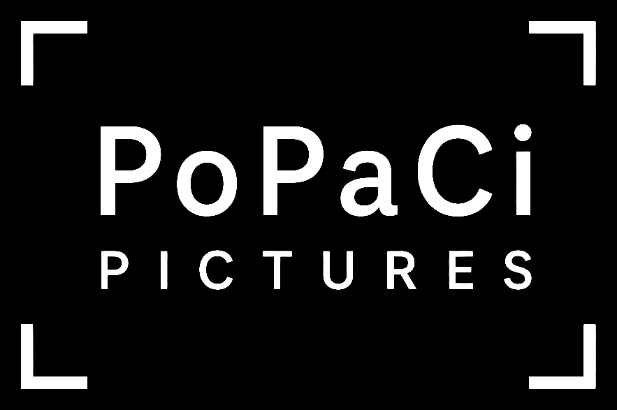
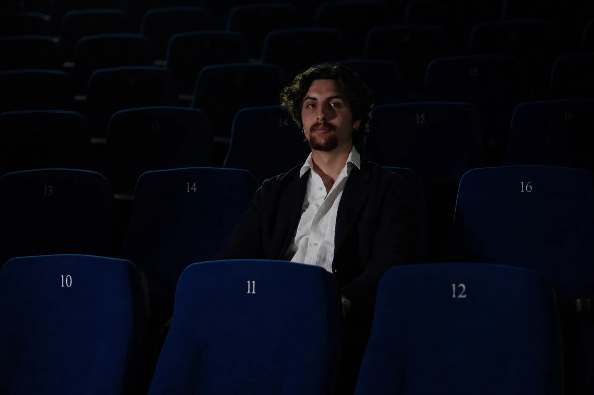

← About · Founder 01
Director, writer and producer. Co-founder of PoPaCi Pictures SNC.

Founder · Director · Producer
Born in Basel, Switzerland, in 2003, Dario is a Swiss director, writer and producer. In 2022 he began his studies at the International Conservatory of Audiovisual Sciences (CISA), where he obtained a diploma in Visual Design in 2024 and graduated in film directing in 2025.
In his work he explores hybrid languages and contemporary formats, with a particular focus on integrating artificial intelligence into creative processes. His graduation short film Present was selected for several international festivals, including the World AI Film Festival, where it won the award in the ‘8th Art Film’ section.
He serves as General Director and Artistic Director of the Merge Film Festival and is co-founder of PoPaCi Pictures SNC.